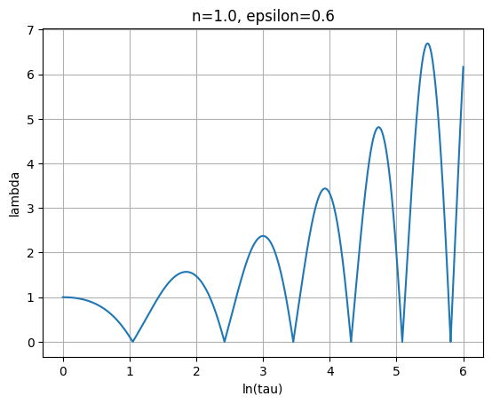
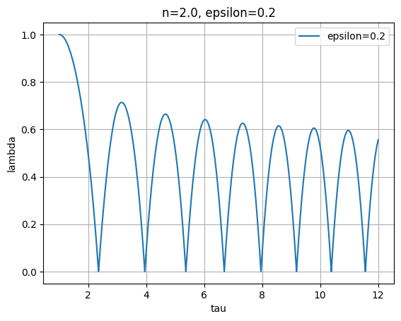

Dark Matter Halos
This project numerically solves the self-similar collapse of dark matter under n-dimensional symmetry, following the framework of Fillmore & Goldreich (1984). We consider the spherical ($n=3$), cylindrical ($n=2$), and planar ($n=1$) cases and track the orbit of a single mass shell as it decouples from the Hubble flow, turns around, and falls inward.
Setup
Consider a pressureless, self-gravitating fluid with n-dimensional symmetry. A shell at initial (turnaround) position $x_i$ encloses a mass perturbation scaling as $\delta M \propto x_i^{n\varepsilon}$, where $\varepsilon$ controls the initial overdensity profile. The equation of motion for the shell is
$$\frac{d^2 x}{dt^2} = -\frac{2}{9}\frac{x}{t^2} - \frac{4\pi G \,\delta M}{x^{n-1}}$$where the first term is the background Hubble deceleration and the second is the gravitational pull from the enclosed mass excess.
Self-Similar Scaling
We non-dimensionalise using the turnaround radius $x_*$ and time $t_*$ of a reference shell, defining $$\lambda = \frac{x}{x_*}, \qquad \tau = \frac{t}{t_*}.$$ The turnaround radius of a shell that turns around at time $t$ is $$x_*(t) = C_x\, t^{2/3(1+1/n\varepsilon)},$$ and the corresponding time scaling is $t_* = C_t \,t_i$ for some constants $C_t$, $C_x$ that depend on symmetry:
| Symmetry | $n$ | $C_t$ | $C_x$ |
|---|---|---|---|
| Planar | 1 | $5/6$ | $5/12$ |
| Cylindrical | 2 | $1.39$ | $0.74$ |
| Spherical | 3 | $(3\pi/4)^{2/3}$ | $1$ |
In scaled variables the equation of motion becomes
$$\frac{d^2\lambda}{d\tau^2} = -\frac{2}{9}\frac{\lambda}{\tau^2} - \frac{\lambda}{\tau^2}\,M\!\left(\frac{\lambda}{\Lambda(\tau)}\right)$$where
$$\Lambda(\tau) = \tau^{\,2/3\,(1+1/n\varepsilon)}$$is the turnaround radius of the shell that is currently turning around at time $\tau$, and $M(u)$ is the fraction of mass enclosed within radius $u\,\Lambda$ relative to the reference shell. By construction $M(1) = 1$; shells with $\lambda/\Lambda < 1$ have already turned around and contribute to the enclosed mass.
The initial conditions at turnaround ($\tau = 1$) are
$$\lambda(1) = 1, \qquad \dot\lambda(1) = 0.$$Numerical Method
Because $M(\lambda/\Lambda)$ depends on the full orbit history of all shells, the problem is solved iteratively:
- Start with $M = 0$ (no self-gravity from collapsed shells).
- Integrate the ODE with RK4 to obtain $\lambda(\tau)$.
- Build the mass profile from the solution: for each $\tau$, count which shells have $\lambda < \Lambda(\tau)$ (i.e. have collapsed inside).
- Repeat from step 2 using the updated $M$ until the solution converges (relative tolerance $10^{-3}$).
Implementation
import numpy as np
from scipy.integrate import solve_ivp
import matplotlib.pyplot as plt
class ODESolver:
"""
Iterative RK4 solver for n-dimensional self-similar dark matter collapse.
Convergences when the mass profile changes by less than `tol` between iterations.
"""
def __init__(self, n, epsilon, precision=1e-2):
self.n = n
self.epsilon = epsilon
self.precision = precision
# Turnaround constants C_t, C_x by symmetry
if n == 1:
self.Ct = 5 / 6
self.Cx = 5 / 12
elif n == 2:
self.Ct = 1.39
self.Cx = 0.74
elif n == 3:
self.Ct = (3 * np.pi / 4) ** (2 / 3)
self.Cx = 1.0
self.alpha = 2 / 3 * (1 + 1 / (n * epsilon)) # exponent for Lambda(tau)
self.ratio_arr = None # lambda / Lambda at each saved tau
self.lambda_arr = None # lambda(tau) solution
# ------------------------------------------------------------------ #
def Lambda(self, tau):
"""Turnaround radius of the shell turning around at time tau."""
return tau ** self.alpha
def M_value(self, ratio):
"""
Interpolate the enclosed-mass fraction at lambda/Lambda = ratio,
using the sorted ratio array from the previous iteration.
"""
if self.ratio_arr is None:
return 0.0
idx = np.searchsorted(self.ratio_arr, ratio)
return idx / len(self.ratio_arr)
def ode_system(self, tau, y):
lam, dlam = y
ratio = lam / self.Lambda(tau)
M = self.M_value(ratio)
d2lam = -(2 / 9) * lam / tau**2 - lam / tau**2 * M
return [dlam, d2lam]
# ------------------------------------------------------------------ #
def RK4_solve(self, last_tau, iter_num=40, tol=1e-3):
tau_span = (1.0, last_tau)
y0 = [1.0, 0.0] # lambda(1)=1, dlambda/dtau(1)=0
for _ in range(iter_num):
sol = solve_ivp(
self.ode_system, tau_span, y0,
method='RK45', dense_output=True,
rtol=self.precision, atol=self.precision * 1e-3,
)
tau_vals = sol.t
lam_vals = sol.y[0]
new_ratio = lam_vals / self.Lambda(tau_vals)
new_ratio_sorted = np.sort(new_ratio)
# Check convergence
if self.ratio_arr is not None:
r_old = np.interp(
np.linspace(0, 1, len(new_ratio_sorted)),
np.linspace(0, 1, len(self.ratio_arr)),
self.ratio_arr,
)
err = np.max(np.abs(new_ratio_sorted - r_old))
if err < tol:
break
self.ratio_arr = new_ratio_sorted
self.lambda_arr = lam_vals
return tau_vals, lam_vals
Results
Planar collapse ($n = 1$, $\varepsilon = 0.6$)
For planar symmetry the orbit undergoes rapid oscillations that damp toward a self-similar attractor. Plotting $\lambda$ against $\ln\tau$ reveals the oscillation frequency and amplitude decay.

Cylindrical collapse ($n = 2$)
In the cylindrical case we compare a stiff initial profile ($\varepsilon = 0.8$) with a shallower one ($\varepsilon = 0.2$). Larger $\varepsilon$ leads to faster collapse and stronger eventual confinement of the shell.

References
- Fillmore, J. A. & Goldreich, P. (1984). Self-similar gravitational collapse in an expanding universe. ApJ, 281, 1–8.